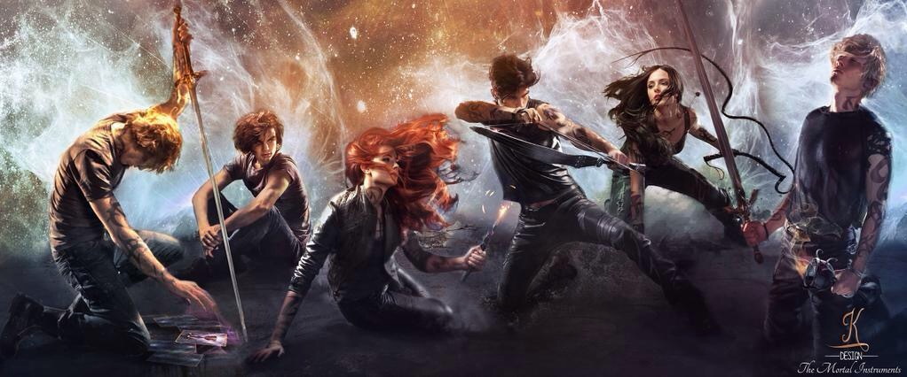

Хроники Сумеречных Охотников (также известная как Сумеречные Охотники) - это молодежная франшиза фэнтези книг, состоящая из нескольких серий, и нескольких кратких историй написанных американской писательницей Кассандрой Клэр, вместе с некоторыми сопутствующими книгами, графическим романом, мангой, фильмом, и сериалом.
Каждая из историй рассказывает о сверхъестественном конфликте между Сумеречными Охотниками, группа могущественных гибридов людей и ангелов, и жителей Нижнего Мира, сообщества мифических существ, и их борьбе с демонами.
Главные серии(в хронологическом порядке):
- Адские Механизмы:
- Механический Ангел;
- Механический Принц;
- Механическая Принцесса;
- После моста;
- Последние Часы:
- Цепь из Золота;
- Цепь из Железа;
- Цепь из Шипов;
- Орудия Смерти:
- Город Костей;
- Город Праха;
- Город Стекла;
- Город Падших Ангелов;
- Город Потерянных Душ;
- Город Небесного Огня;
- Хроники Бейна;
- Хроники Академии Сумеречных Охотников;
- Темные Искусства:
- Леди Полночь;
- Лорд Теней;
- Королева Воздуха и Тьмы;
- Древние Проклятия:
- Потерянная Белая Книга;
- Черный Том Мертвых;
- Красные Свитки Магии;
Дополнительные книги:
- Кодекс Сумеречных Охотников;
- История выдающихся Сумеречных Охотников и обитателей Нижнего Мира;
Адаптации:
- Город Костей: Графический роман;
- Орудия Смерти: Город Костей (фильм)
- Орудия Смерти: Город Костей (игра);
- Сумеречные Охотники: Орудия Смерти (сериал);